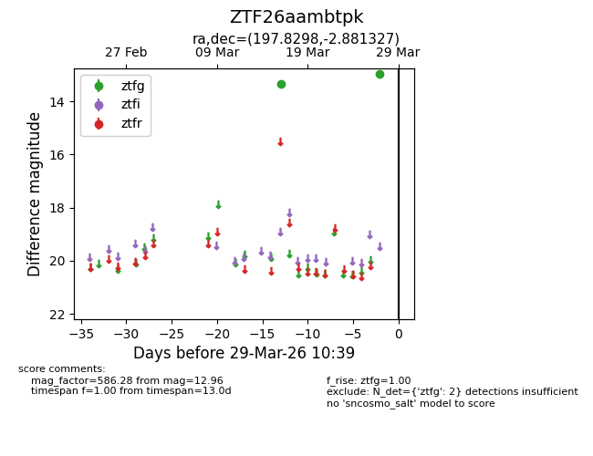
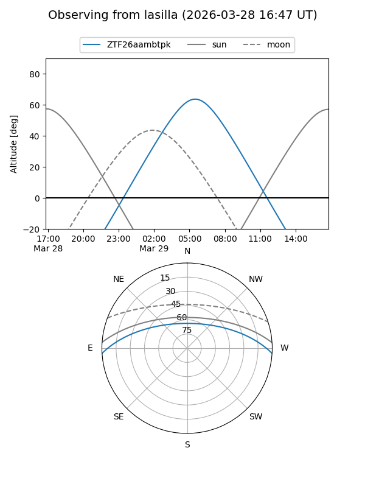
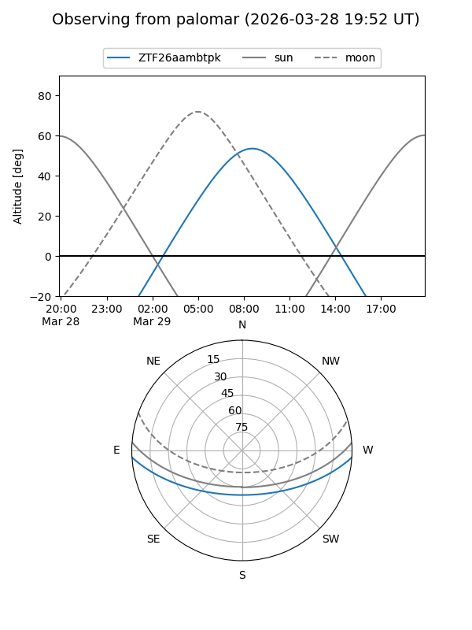

ZTF26aambtpk
Target ZTF26aambtpk at 2026-03-29 10:41
Aliases and brokers:
FINK: link
Lasair: link
ALeRCE: link
alt names
ZTF26aambtpk (ztf,fink_ztf)
Coordinates:
equatorial (ra, dec) = 197.8298,-2.88133
equatorial (HMS+DMS) = 13:11:19.14,-02:52:52.78
galactic (l, b) = (312.7805,+59.60972)
Flags:
Photometry:
last ztfg=12.96
2 ztfg detections
Lightcurve

Visibility


Additional plots